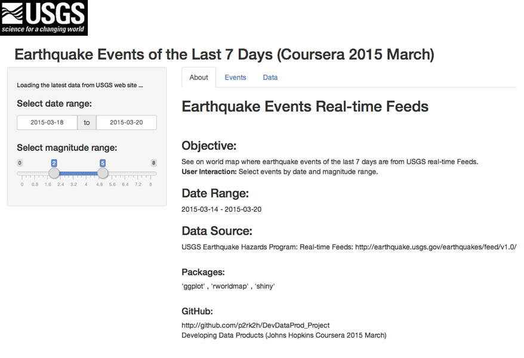
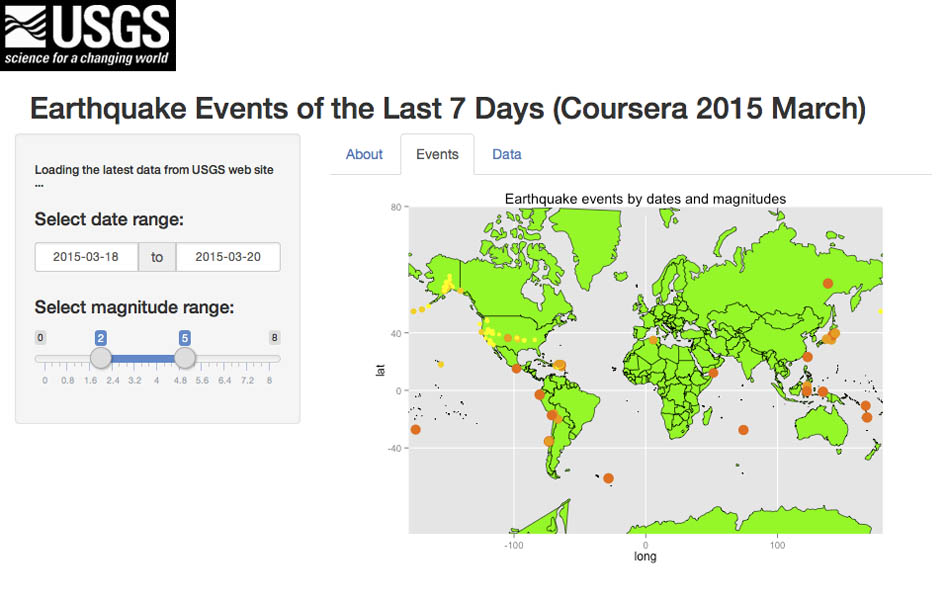

Earthquake Event Visualization
Developing Data Product Project
(Johns Hopkins Coursera 2015)
Peter Luh
What's New?
- Ever wondered where earthquakes have struck in the past week worldwide?
- Ever wished to quickly pinpoint in real time where on a world map is that latest large destructive earthquake you just heard about?
- Then this shiny app is for you for checking out these earthquakes interactively by
- Selecting date and magnitude range to see your earthquake events scaled and colored by magnitudes on a world map!
- Browsing tables of detailed and summary data of your selected events!
Sliderbars for User Interaction

Earthquake Event Visualization

Coursera Project Summary
- Create a Shiny app of interactive visualization for the 'Developing Data Product' project (2015 March)
- Download the latest 7-day earthquake events from the USGS Real-time Feeds
- Prepare the dataset to map time to date and magnitude to color scale for
- Selecting date and magnitude range to plot earthquake events on world map
- Browsing tables of the detailed and summary data of the selected events
- See GitHub for source code and slidify markdown file